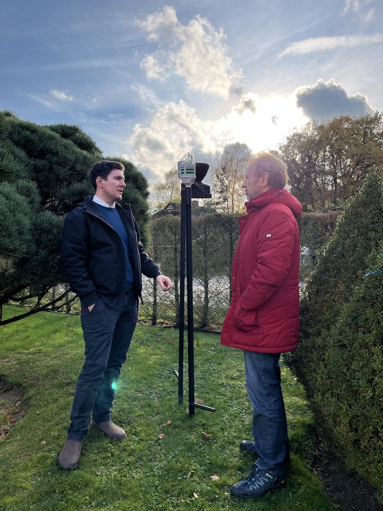

Andreas Heckmann (Agvolution GmbH) im Gespräch mit Dr. Michael Malms (mm-it4you)
Halbjahresmeeting in der Baumschule Bonk
Die ersten Erfahrungen mit dem Einsatz der Sensortechnik auf dem Baumschulgelände
wurden im Rahmen eines OG-Meetings in Bad Zwischenahn ausführlich diskutiert und
interpretiert.
Insgesamt sind derzeit 10 CLIMAVI IoT-Sensoren an verschiedenen Gehölzen in der
Baumschule installiert, diese messen in 10 cm, 30 cm und 45 cm Tiefe die
Bodenfeuchte und -temperatur. Über die AGVOLUTION App Farmalyzer werden u.a. die
zeitlichen Verläufe der Bodenfeuchte in den drei Messbereichen graphisch
dargestellt. Je nach Bodenbeschaffenheit, Mikroklima, Bepflanzung und Bewässerung
(Tröpfen- oder Fass-Bewässerung) ergeben sich sehr unterschiedliche Verläufe. Um
genaue Bewässerungsprognosen geben zu können, müssen weiterhin zahlreiche Daten
generiert und ausgewertet werden. Referenzmessungen erfolgen mit jeweils drei
Tensiometern pro Sensor sowie gravimetrischer Bestimmung der Bodenfeuchte.
Die erste Entwicklungs- und Versuchsphase auf dem Baumschulgelände Bonk führte
u.a. zu den Erkenntnissen, dass gerade bei Gießränder-Bewässerung in trockenem
Gelände, die ausgebrachten Wassermengen schnell versickern und auch im
Wurzeltrichter der Feuchteanstieg nur von kurzer Dauer ist. Um dieses Phänomen
genauer zu erfassen, muss bei großen Gehölzen die Feuchte bis zum Ballenboden
erfasst werden. Um eine Tiefe von bis zu 105-120 cm zu erreichen, wird eine neue
Sensoranordnung ausprobiert. Dafür werden zwei Sensoren in unterschiedlichen
Einbringtiefen miteinander verbunden (ein Sensorfuß ca. 60 cm tief im Boden, ein
Sensor in Standarthöhe).
Zudem zeigen die Ergebnisse der Sensoren immer wieder deutlich, dass die Bodenart
großen Einfluss auf die Wasserspeicherkapazität hat. Die Erarbeitung von
Bewässerungsprognosen und die Interpretation der relativen Bodenfeuchte muss
daher eine Vielzahl von Informationen über den Boden und die Gehölze
berücksichtigen. Das Einarbeiten der Schlagkarteien der Baumschule mit Zuordnung
der Gehölze auf den jeweiligen Flächen sowie deren exakte geografische Lage in
die Software werden für das Trainieren des Prognosemodells hinzugezogen. Mit der
AR-Funktion (Augmented Reality) sind die IoT-Sensoren exakt positioniert. In
Zukunft soll es somit möglich sein, für jeden Standort in der Baumschule eine
Bewässerungsempfehlung zu generieren, die an die Boden- und Gehölzarten
angepasst ist.
NuTree betrachtet die gesamte Wertschöpfungskette von Bäumen – in der Baumschulen
als Urerzeuger den Grundstein für eine gesunde Aufzucht der Gehölze legen. Die
Baumschule Bonk vertreibt große und langjährig aufgezogene Bäume die regelmäßig
innerhalb der Baumschule verpflanzt werden. Informationen über den Feuchtegehalt
im gesamten Wurzelballen eines Baumes ist für den Bewirtschaftenden daher
besonders wichtig.
Andere Prioritäten werden in der Stadt Hannover gelegt: Ziel ist es, die
Bewässerungsstrategie in der Stadt grundsätzlich zu verbessern. Es ist nicht
möglich, einzelne Bäume zu betrachten, sondern es müssen repräsentative
Standorte für die IoT-Sensoren gefunden werden, um größere Flächen abzudecken.
AGVOLUTION hat für das Projekt neue, Vandalismus sichere Solar-Sensoren
konzipiert. Diese werden im Dezember erstmals in Hannover an einem Grünstreifen
mit einjährigen Bäumen platziert. Somit startet die zweite NuTree-Praxisphase –
sowohl in der Stadt als auch weiterhin in der Baumschule Bonk in Bad
Zwischenahn. Zudem werden Vorbereitungen für einen sensorüberwachten Transport
eines Allee-Baumes von Bad Zwischenahn nach Hannover getroffen, dieser ist für
Herbst 2023 geplant.

v.l.n.r. Jan Pinski und Tina Kruse (Landeshauptstadt
Hannover, Bereich Umwelt und Stadtgrün), Greta Fenske (Seedhouse Accelerator),
Stephan Bonk (Bonk Baumschulen), Dr. Michael Malms (mm-it4you), Andreas Heckmann
(Agvolution GmbH)
 Greta Fenske
Greta Fenske